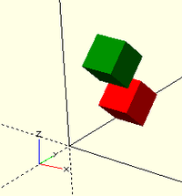

When combining transformations, it is a sequential process, but going right-to-left. That is
rotate( ... ) translate ( ... ) cube(5) ;
would first move the cube, and then move in an arc (turning it the same amount) at the radius given by the translation.
translate ( ... ) rotate( ... ) cube(5) ;
would first turn the cube and place it at the offset defined by the translate.

Created with the Personal Edition of HelpNDoc: Write eBooks for the Kindle